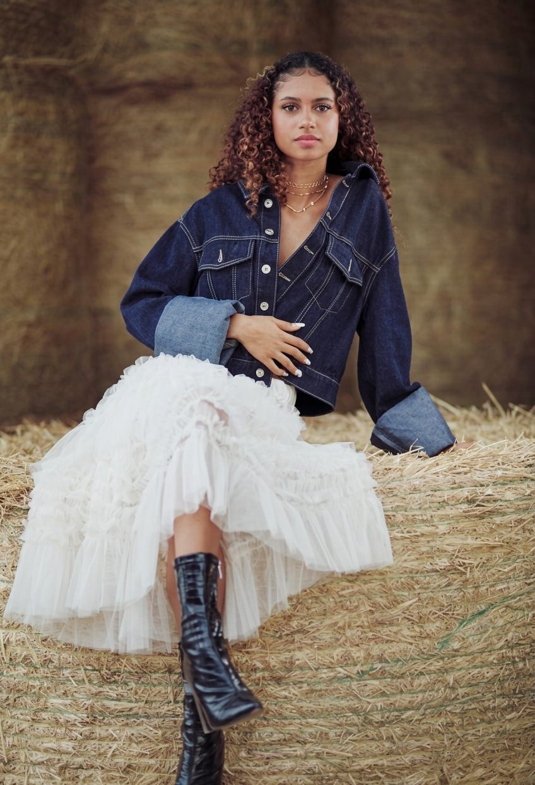

Studio · Flash de studio
Le flash de studio se règle à la main et se mesure au flashmètre. Voici les mises en place classiques, de la plus simple à la plus travaillée.
Studio · Flash cobra
Le flash cobra (speedlight) se déclenche à distance avec un transmetteur. Léger et mobile, il change tout en extérieur comme en petit studio.
Lumière continue
La lumière continue (LED, halogène) permet de voir le rendu en direct — idéale pour la vidéo et les débutants. Elle demande plus de puissance qu'un flash.
Extérieur
Dehors, on travaille avec le soleil — ou contre lui. La lumière dorée, le fill flash et le contre-jour changent complètement l'image.
Strobisme · Flash déporté
Le flash déporté sort du axe de l'objectif : on façonne la lumière comme au studio, en plein air ou dans une pièce sans fenêtres.
Exemples réels
Le rendu obtenu sur le terrain — ces photos viennent de la galerie.

Portrait studio
Une softbox en clé, le fond à part.

Extérieur
Lumière naturelle ou flash déporté.

Lumière sculptée
Key, fill et rim dosés au flashmètre.

Portrait net
La lumière fait le relief, pas le flash.